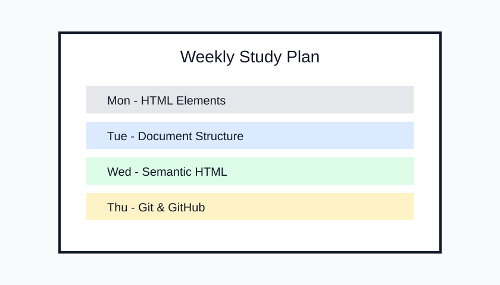

My name is Phan Ngọc Minh Hằng.
I am a final-year student majoring in Applied Mathematics.
I am interested in web design and technology.
I enjoy learning how websites are structured and how digital products
are created for users.
My current goal is to improve my knowledge of web development
and continue learning Front-end Development after building
a strong foundation in HTML.
Skills
Current Skills
HTML document structure
Semantic HTML
Basic web page organization
Working with links, images, lists, tables and forms
Using Visual Studio Code
Using XAMPP and localhost
Basic Git and GitHub workflow
Skills I Want to Improve
Front-end Development
CSS for layout and visual design
JavaScript for web interaction
Responsive Web Design
UI/UX Design
Projects
Project 01 - WD Lab01 HTML Website
Web Design project created for WD Lab01.
This project is a collection of HTML pages created for the
Web Design Lab01 assignment. It demonstrates heading hierarchy,
links, images, semantic HTML, tables, forms and internal navigation.
The project is built with HTML only and runs
through XAMPP and Apache on localhost.
Project 02 - Applied Mathematics Study Plan

A study plan project for organizing learning goals.
This project presents a personal study plan for Applied Mathematics.
The content organizes subjects, learning goals and important skills
that I want to improve during my final year at university.
The project also helps me practice organizing information using
headings, lists, tables and semantic HTML structure.
Education
I am currently a final-year student majoring in Applied Mathematics.
My studies have helped me develop logical thinking, problem-solving
skills and the ability to work with structured information.
Period
Program
Focus
2023 - 2026
Applied Mathematics
Mathematical modeling, logical thinking and problem solving
2026
Web Design Fundamentals
HTML structure, semantic HTML and web page organization
Next Goal
Front-end Development
CSS, JavaScript and responsive web design
Interests
I am interested in web design, technology and digital products.
I enjoy learning how websites are structured and how different
interface elements work together to create a clear user experience.
Besides technology, I am also interested in applying logical thinking
from mathematics to real problems. I like exploring how analytical
thinking can support problem solving in both study and everyday life.
Current Interests
Web Design
Front-end Development
Technology
UI/UX Design
Applied Mathematics
Goals
My short-term goal is to improve my knowledge of HTML, CSS and
JavaScript so that I can build complete and user-friendly websites.
I also want to become more confident in organizing content,
designing interfaces and solving problems during the development process.
In the future, I want to continue learning Front-end Development
and apply both technical skills and logical thinking from
Applied Mathematics to real projects.
Learning Goals
Build a strong foundation in HTML.
Learn CSS for layout and visual design.
Learn JavaScript for web interaction.
Practice responsive web design.
Create more personal Front-end projects.
Contact
If you would like to contact me, you can use the information below.